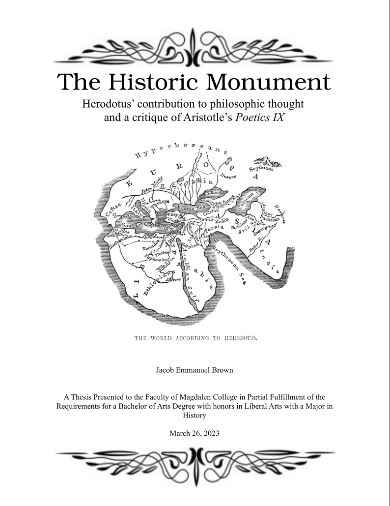
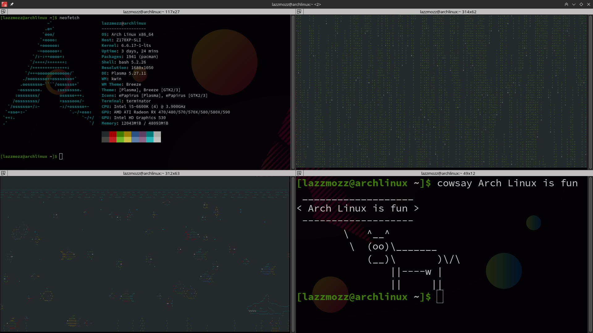
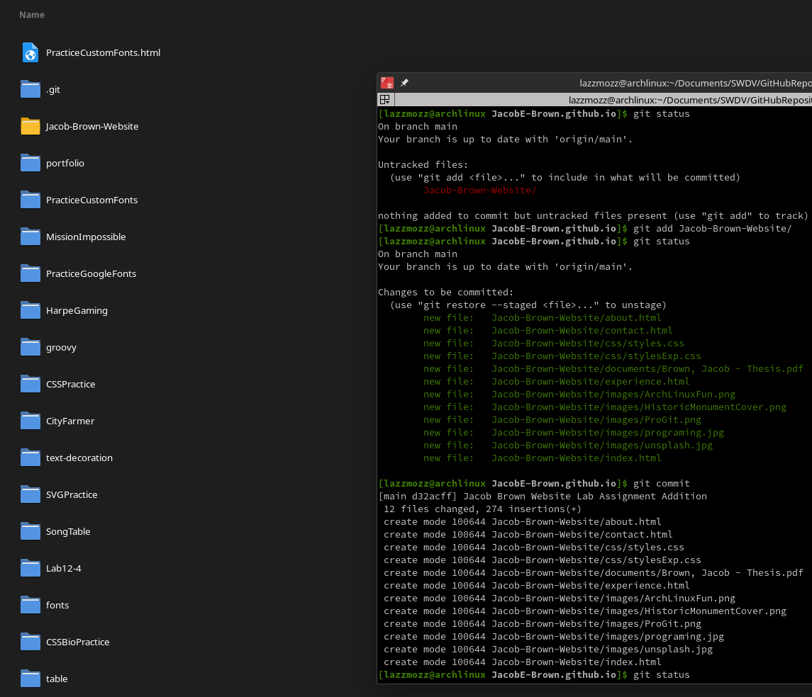

College career and Experience
I have attained my Bachelors of the Arts from Magdalen College with a major in History.
I will be completing my Associate of Applied Science in Software Development in 2025 from CWI
For the time being, I work as a bus driver and as a latin tutor on the weekends
| Senior Thesis for Bachelors of the Arts | Self Study of Arch Linux | Self study of Git |
|---|---|---|
|  |  |  |
|
In order to graduate with honors from my college, I needed to write and present a thesis that was 20-30 pages in length. Presented here is my finished essay. The topic I choose was an examination of Aristotle's claim in the Poetics that History is less philosophical than poetry. I attempt to understand why he says this, what makes a thing philosophical, and I used Herodotus as an example to show that history can be philosophical. |
I wanted to know more about computers. I also got frusterated with certain aspects of Windows 10 and I wanted to customize my computer more than Windows 10 would allow. I set out into the deep and installed linux, I have never looked back. Now I am running an Arch linux installation and learning new things about it every day. Things that I have learned:
|
In order to know how to work collaboratively on projects with other developers I have taken up learning git. Thus Far I have learned to:
|